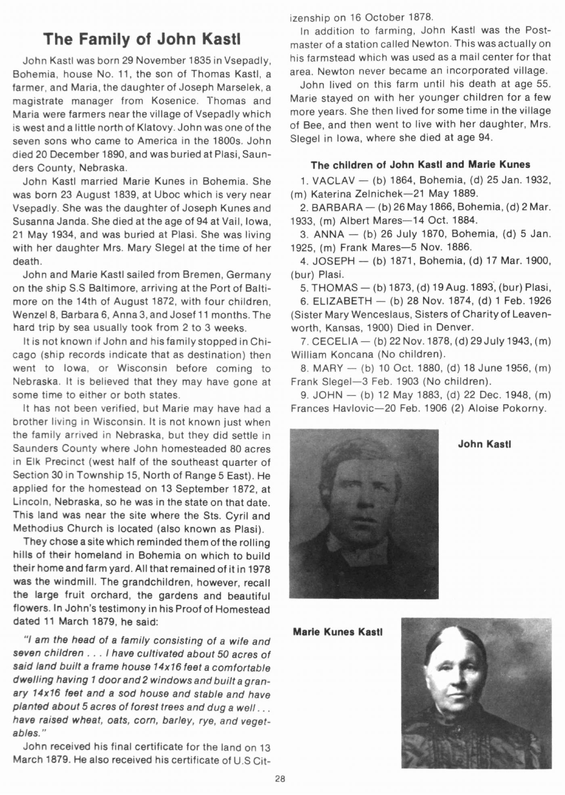
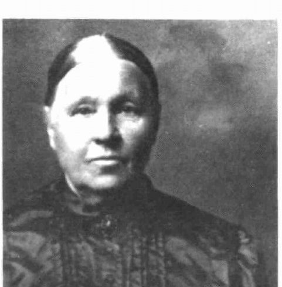

The book · The Family of John Kastl
Page 28 The Family of John Kastl


Transcription
The Family of John Kastl
John Kastl was born 29 November 1835 in Vsepadly, Bohemia, house No. 11, the son of Thomas Kastl, a farmer, and Maria, the daughter of Joseph Marselek, a magistrate manager from Kosenice. Thomas and Maria were farmers near the village of Vsepadly which is west and a little north of Klatovy. John was one of the seven sons who came to America in the 1800s. John died 20 December 1890, and was buried at Plasi, Saunders County, Nebraska.
John Kastl married Marie Kunes in Bohemia. She was born 23 August 1839, at Uboc which is very near Vsepadly. She was the daughter of Joseph Kunes and Susanna Janda. She died at the age of 94 at Vail, Iowa, 21 May 1934, and was buried at Plasi. She was living with her daughter Mrs. Mary Slegel at the time of her death.
John and Marie Kastl sailed from Bremen, Germany on the ship S.S Baltimore, arriving at the Port of Baltimore on the 14th of August 1872, with four children, Wenzel 8, Barbara 6, Anna 3, and Josef 11 months. The hard trip by sea usually took from 2 to 3 weeks.
It is not known if John and his family stopped in Chicago (ship records indicate that as destination) then went to Iowa, or Wisconsin before coming to Nebraska. It is believed that they may have gone at some time to either or both states.
It has not been verified, but Marie may have had a brother living in Wisconsin. It is not known just when the family arrived in Nebraska, but they did settle in Saunders County where John homesteaded 80 acres in Elk Precinct (west half of the southeast quarter of Section 30 in Township 15, North of Range 5 East). He applied for the homestead on 13 September 1872, at Lincoln, Nebraska, so he was in the state on that date. This land was near the site where the Sts. Cyril and Methodius Church is located (also known as Plasi).
They chose a site which reminded them of the rolling hills of their homeland in Bohemia on which to build their home and farm yard. All that remained of it in 1978 was the windmill. The grandchildren, however, recall the large fruit orchard, the gardens and beautiful flowers. In John's testimony in his Proof of Homestead dated 11 March 1879, he said:
"I am the head of a family consisting of a wife and seven children . . . I have cultivated about 50 acres of said land built a frame house 14x16 feet a comfortable dwelling having 1 door and 2 windows and built a granary 14x16 feet and a sod house and stable and have planted about 5 acres of forest trees and dug a well . . . have raised wheat, oats, corn, barley, rye, and vegetables."
John received his final certificate for the land on 13 March 1879. He also received his certificate of U.S Citizenship on 16 October 1878.
In addition to farming, John Kastl was the Postmaster of a station called Newton. This was actually on his farmstead which was used as a mail center for that area. Newton never became an incorporated village.
John lived on this farm until his death at age 55. Marie stayed on with her younger children for a few more years. She then lived for some time in the village of Bee, and then went to live with her daughter, Mrs. Slegel in Iowa, where she died at age 94.
The children of John Kastl and Marie Kunes
- VACLAV — (b) 1864, Bohemia, (d) 25 Jan. 1932, (m) Katerina Zelnichek—21 May 1889.
- BARBARA — (b) 26 May 1866, Bohemia, (d) 2 Mar. 1933, (m) Albert Mares—14 Oct. 1884.
- ANNA — (b) 26 July 1870, Bohemia, (d) 5 Jan. 1925, (m) Frank Mares—5 Nov. 1886.
- JOSEPH — (b) 1871, Bohemia, (d) 17 Mar. 1900, (bur) Plasi.
- THOMAS — (b) 1873, (d) 19 Aug. 1893, (bur) Plasi,
- ELIZABETH — (b) 28 Nov. 1874, (d) 1 Feb. 1926 (Sister Mary Wenceslaus, Sisters of Charity of Leavenworth, Kansas, 1900) Died in Denver.
- CECELIA — (b) 22 Nov. 1878, (d) 29 July 1943, (m) William Koncana (No children).
- MARY — (b) 10 Oct. 1880, (d) 18 June 1956, (m) Frank Slegel—3 Feb. 1903 (No children).
- JOHN — (b) 12 May 1883, (d) 22 Dec. 1948, (m) Frances Havlovic—20 Feb. 1906 (2) Aloise Pokorny.



People from the line of descent on this page
- Josef Marsalek
- John Kastl 1835–1890
- Marie Kunes 1839–1934
- Vaclav Kastl 1864–1932
- Barbara Kastl 1866–1933
- Anna Kastl 1870–1925
- Joseph Kastl 1871–1900
- Thomas Kastl 1873–1893
- Elizabeth Kastl 1874–1926
- Cecelia Kastl 1878–1943
- Mary Kastl 1880–1956
- John Kastl 1883–1948
Transcriber’s notes
New chapter. The left column runs on to the top of the right column ('U.S Cit-' / 'izenship on 16 October 1878.'). Captions sit beside the photos (John Kastl to the right of his photo; Marie Kunes Kastl to the left of hers). Joseph's surname printed 'Marselek' here vs 'Marsalek' on p.26; Marie's daughter printed 'Mrs. Mary Slegel'. Item 5 THOMAS ends with a comma as printed and has a small mark after '1893'. The homestead testimony quotation is printed in italics.